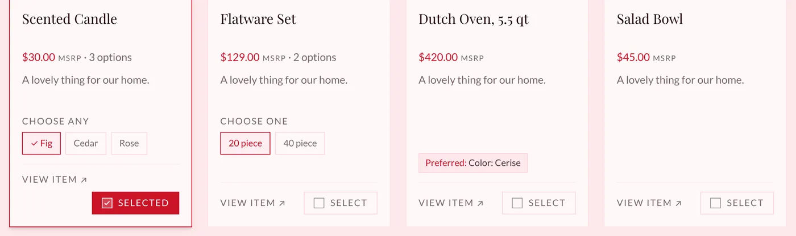
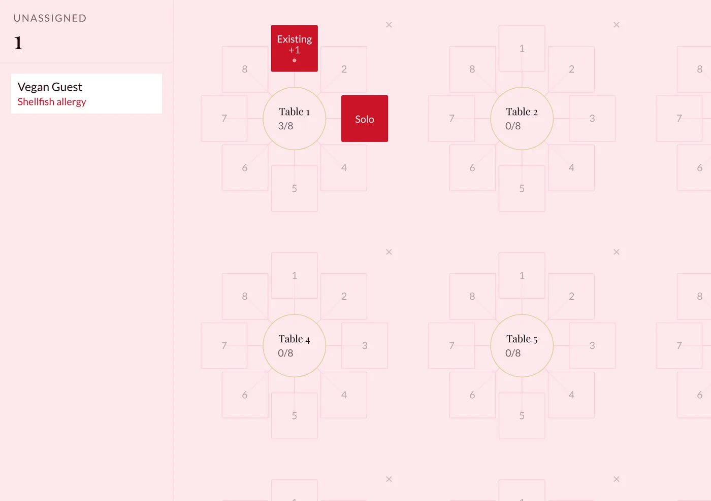

A private website for our wedding: invitations, RSVPs with meal
choices, a gift registry, a seating chart and the day's details,
all behind one shared password.
Much of it was built in conversation with Claude Code, Anthropic's
coding agent. I described what I wanted in plain language and made
the product decisions; Claude read the code, made each change,
checked it in a headless browser and opened a pull request, and
merging deployed it. For bigger features and for testing, the main
session split the work across several agents running in parallel.
The site itself is guests-only, so this page describes how it
works rather than linking to it.
10 pages, 16 API routes, 33 components; about 9,200 lines of TypeScript and JavaScript
History
127 commits in 28 pull requests, May to November 2026
Source
Not linked: a guest-only site
Invite-Only Access
Only guests should see the site, without anyone having to create
an account. Everyone gets the same password, delivered as a link
in their invitation.
One link, any device. Opening the invite link signs that device in and shows the password, so it can be typed on a second device. The link doesn't contain the password: it carries a short token derived from the password and a server-side secret.
Signed sessions. The session cookie is an HMAC tied to the password's hash, so changing the password signs everyone out and retires every old link at once.
Wrong-guess blocking. Five wrong guesses from one network pause entry for an hour (a day for repeat offenders), and the page says how long is left.
Safe returns. After signing in, guests land on the page they asked for. The return path is checked so a crafted link can't send them to another site afterwards, including the tab-character trick that browsers quietly strip, which testing caught.
RSVPs, Meals and Edits
Each RSVP is a row in a Notion database, which doubles as the
caterer's list.
One tap for attendance. "Joyfully accepts – just me", "Joyfully accepts – with a +1" or "Regretfully declines", then a meal for each person from two mains and a list of dietary options.
One row per email. Submitting again updates the same RSVP, and two submissions for the same address at once are handled one after the other, so they can't create duplicates.
Confirmation email. The answers, calendar files (an .ics with its time zone, and a Google Calendar link) and a signed link to change the RSVP. The edit deadline is enforced on the server, not just in the page.
Lost links. "Email me my edit link" answers the same way, in the same time, whether or not an address has an RSVP, so it can't be used to check who's invited.
Update emails. Guests can opt out of wedding updates; the choice is saved with their RSVP.
A Registry with Notion as the Back End
Gifts live in a Notion database we edit like a spreadsheet. The
site turns the rows into a registry with category and price
filters; picking gifts emails the guest the purchase links and
our shipping address.
Options and quantities. Rows that share a group become one gift with a picker. A group can be "choose one" (picking an option closes the rest) or "choose any" (each option is claimed separately), and any row can want more than one. For a pair of lamps, the first purchase picks the finish and the next guest only sees that finish.
Claims that can't collide. Notion has no transactions, so claims are processed one at a time, availability is re-read from Notion before each one, and the names, prices and links in the email come from Notion rather than the browser. If the email fails, the claim is rolled back so the guest can simply try again.
Privacy. A guest's name and email are stored encrypted on the gift they claimed, and the shipping address only appears once a gift is claimed.
Prices and cash. Prices are marked as MSRP, with a note encouraging guests to buy wherever it's cheaper, and a cash-on-the-day option sits at the top of the page.

Fig. 1. Registry cards, shown with sample data: a "choose any" gift with one option selected, a "choose one" gift, and a gift with a preferred colour.
The Front End
An envelope intro. The seal cracks, the flap opens and the card slides out. It plays once per browser tab and is skipped for reduced-motion settings or when a guest follows a link straight to a section.
The rest of the page. Falling petals drawn with three.js through react-three-fiber, a photo gallery with a parallax grid and a lightbox, a countdown, an FAQ and a local guide.
Accessibility from testing. Labelled form fields, a lightbox that behaves as a dialog, keyboard paths through every menu, and small text raised to at least 4.5:1 contrast.
Sharing. A link-preview image and icons, and no search-engine indexing anywhere.
Seating Chart
A separate password-protected page where we drag attending
guests onto tables. Each assignment is saved to Notion and copied
onto the guest's RSVP, so the chart and the caterer's list agree.
A guest bringing a plus-one counts as two places; a table over capacity turns red.
Two open tabs can't double-book a seat: the server refuses a taken seat, and swapping two seated guests is saved as three ordered steps.
A guest assigned to a table this browser doesn't know about is listed as unassigned instead of disappearing.

Fig. 2. The seating chart with sample guests. Table 1 reads 3/8 because one of its two guests brings a plus-one.
Private Dashboards
Meal counts for the caterer. Totals per dish including plus-ones, declines left out, and every allergy note in one list.
Page views. Counted in memory and written to Notion at most once a minute, by day and page only. Only real page paths are counted.
Passwords. Compared in constant time, and ten wrong tries in fifteen minutes locks that network out for the rest of the window.
Invitation Emails
A script I run from my own computer sends the invitations. It
reads a guest list that's kept out of the repository, previews
the email, sends a test, and only sends for real after I type
SEND.
Each household's send carries an idempotency key and is recorded, so running it again only emails people added since.
Each run stays under the email provider's daily limit; the next run picks up where it stopped.
The same design can be uploaded to Resend as a draft broadcast, to review and send from their dashboard instead.
Working with Claude and Agents
Most requests were a sentence or two, like "for the cash
registry, put it at the top of the page" or "change the door open
time for everything to 4:30pm". Claude found every place that needed to change,
made the edit, built the site, checked the result in a headless
browser, and opened a pull request saying what changed and how it
was checked. Merging it deployed to Render.
One change, one pull request. 28 merged so far, each small enough to read before merging.
Parallel agents for bigger features. For the meal-choice RSVP, the colour palette and the invite gate, the main session wrote a plan and the interfaces the pieces had to share, then handed the pieces to subagents working in separate git worktrees, with another agent testing the combined result.
Decisions stayed mine. One shared password instead of per-household codes, cash on the day instead of payment apps, what stays private, and the wording guests see.
Pushback when it mattered. Claude flagged things I hadn't asked about: an email address that shouldn't go into a public repository, a live bug that stopped guests who declined from submitting, and a fix of its own that had broken seat swapping.
Testing with Parallel Agents
Before sending invitations I asked for a full test of every
interaction. The main session built a harness first: an
in-memory stand-in for the Notion and Resend APIs, with switches
to slow every response, take Notion down or make email fail, and
a preload that points the production build at it. Each tester
agent then ran its own copy of the site, drove it in a real
browser with Playwright, and reported findings with steps to
reproduce.
Table 2. The testing rounds.
Round
Agents
Outcome
1
5 testers, one per area: password gate, RSVP, registry, public pages, private pages and APIs
More than 50 findings, from an open redirect, guest text unescaped in emails and two guests able to claim the same gift, down to contrast
2
1 verifier
All 34 fixes confirmed; 3 small follow-ups
3
5 testers, then 1 verifier
One real regression (seat swapping) and small issues; all 18 fixes confirmed
Two rules kept this honest. The main session reproduced each
finding before fixing it, and the fixes were checked by a fresh
agent rather than by the one that wrote them.
Things That Broke
Headings that lost letters. Animating each letter of a heading drawn with a clipped gradient gave each letter its own compositing layer, where the gradient didn't paint, so "Registry" rendered as "Re stry". Animating the heading as a whole fixed it.
Redirects to localhost. Behind Render's proxy the server only knows its internal address, so redirects sent guests to localhost:10000. The fix was relative redirects plus a configured public address for links in emails.
An upgrade that crashed the petals. Moving to Next.js 15 left the 3D library on a renderer built for the previous React, and the page crashed in the browser until React 19 and the matching react-three-fiber went in together.
Calendar files without carriage returns. Calendar files need CRLF line endings; the build normalised them away in a template string and static rendering did it again. They're now built from explicit characters and generated on each request.
Locked out by our own gate. Next.js's image optimiser fetches images internally without the guest's cookie, so the password gate blocked it. Gallery images are now pre-generated thumbnails.
>
ENTER run · ESC close · home, projects, personal, resume, contact, download, terminal